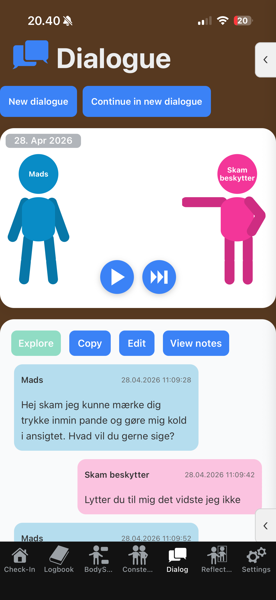
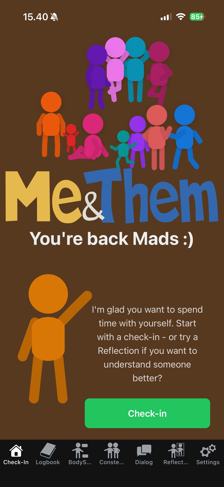
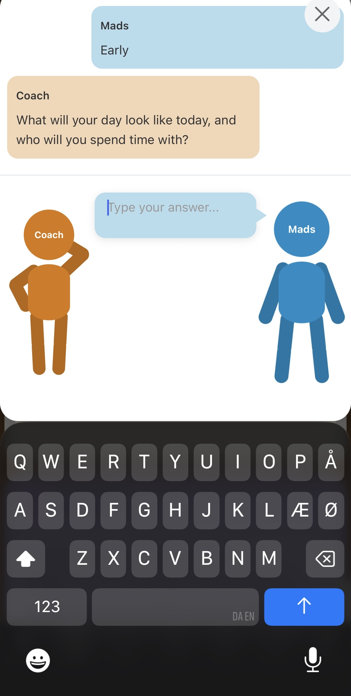
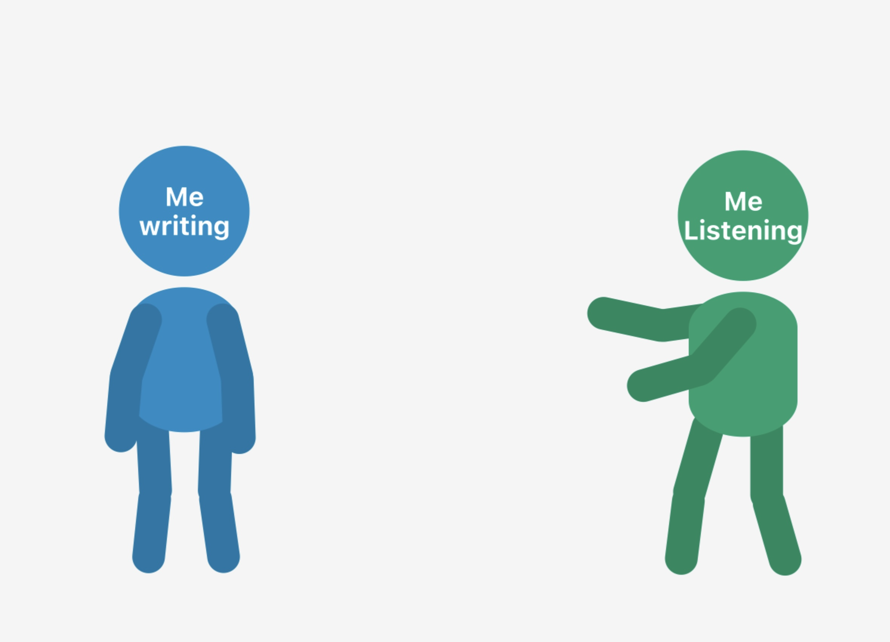
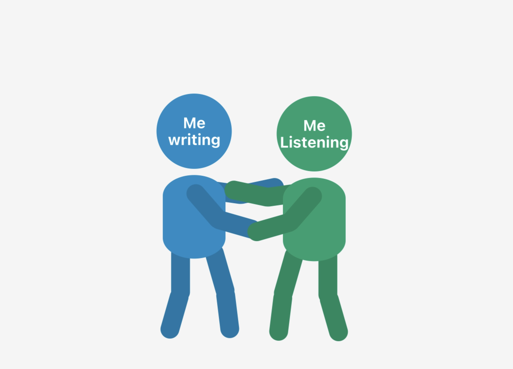

Dialogue with shame.
2026 06 may
This was actually the first blog I did, but I have moved it down a little so it fits better.
I published the App on the 27th of April. After having worked on it for a long time, I was super excited. I waited for a whole day and looked. Nothing really happened not a single download. I expected a lot of people would just find the app, download it, and be happy. It didn't happen. No downloads for the first 2 days. I felt a little sad, and an old familiar voice came visiting.
I sat down with my app and started the dialogue you can see below. Afterward, I felt better.
I didn't write it to show you how you can use it. But after feeling the relief myself, I thought it might be a perfect (imperfect) example of how you could use the app.

Mads: Hey Shame, I could feel you pressing on my forehead and making my face go cold. What do you want to say?
Shame protector: Are you actually listening to me? I didn't know that.
Mads: Yes, I want to try something new.
Shame protector: Oh well, don't go thinking you're something special!
Mads: Well, I actually think I am. Why don't you think I should?
Shame protector: Uh, because then you'll just get hurt and there'll be no one to comfort you.
Mads: So you want to hurt me so I don't get hurt by others, and instead of comforting me, you shame me?
Shame protector: Uh, yes.
Mads: That doesn't quite sound like it serves my best interests.
Shame protector: No, when you put it that way.
Mads: Yeah, I'm not saying this to shame you, but it doesn't feel very loving?
Shame protector: No, you're right, it's actually quite strange.
Mads: Yes. I'm sure you do it for a good reason, but it feels very unloving — and you don't seem very proud of it either?
Shame protector: No, I'm actually feeling a little embarrassed.
Mads: I don't think you need to. Let's focus on your good intention.
Shame protector: Thank you, Mads.
Mads: What else is there?
Shame protector: Anyone can make an app.
Mads: Yes, plenty of people probably can. But not my app — with the brown background and the stick figure with the kind comments. And I have a lot in common with other people. That's actually wonderful. I think many people believe they can, but not that many actually do it. Anyone can't make my app. Only I can. What else?
Shame protector: There are no users.
Mads: No, I'm a little sad about that too, but it'll probably take some time. Maybe I'll have to ask for help.
Shame protector: Loser! Only losers ask for help.
Mads: Okay, that must make you quite lonely, thinking like that. I feel like I'm helping you by listening to your self-punishing rules. You might not be directly asking for help, but there's something unhappy about you that invites it. Do you find it disgusting to receive help?
Shame protector: Uh, no — actually quite nice. I do feel a little embarrassed though, seeing how I talk to you.
Mads: You know what? That's okay. I think you've been hard on yourself because you were afraid you couldn't handle more humiliating rejections and being ignored.
Shame protector: Yes.
Mads: I think you've done well. You're a tough one. A survivor!
Shame protector: Thank you for seeing my strengths. I'm actually moved — and a little sad.
Mads: That's okay. I know the feeling. I know how you feel.
Shame protector: Do you?
Mads: Yes, you're a part of me. And you've taken up a lot of space.
Shame protector: Yes. Can you forgive me?
Mads: Yes, I can. You've carried us in a strange way.
Shame protector: Yes.
Mads: You are a part of me.
Shame protector: Am I?
Mads: Yes, and you've done well. But now we can do something different. I can see your pain. You can see how your harshness hurts others. I can listen to you and understand you.
Shame protector: I'm not a bad person.
Mads: I know that, and you shouldn't think that about yourself. We found the ways that worked. And you didn't choose this alone. You're welcome to be here and say what you want.
Shame protector: I don't think I want to say harsh things anymore.
Mads: That would be wonderful. If you do slip into it, that's okay — we'll look at it together. You are not a bad person.
Shame protector: Thank you, Mads.
Mads: You're welcome, Shame. :)
Shame protector: We'll talk again — yes, we will.
Mads: Be kind to yourself.
Shame protector: Thank you, and you too.
Mads: I will. ❤️
It will probably take some time for people to find this App.
Maybe this can inspire you. Who will you have a dialogue with?
Cheers Mads
Start Journaling. Your journal is your new best friend!
2026 03 may
If you are starting out journaling, or considering to start journaling this might be a good place to start on the right foot.
-What is it to journal?
I thought a bit about it and came up with a good metaphor. Your journal is like a friend. It's your chance to become your own friend.
When you write, be open and brave. Come as you are. It's not important if you say something silly or something rude. What counts and deepens your relationship is that you are honest — also about the less beautiful things. Don't hold back, spill your guts. Dare to be ugly and honest. Dare to open your heart.

When you read, don't judge. Be a listening, curious friend. You know you don't need to say something to be a friend. Be gentle and warm.
It's a bit strange, but most often we don't treat ourselves as we would treat a friend. We judge ourselves harder, we don't stand up for ourselves. A friend knows you are a good person even if you say something stupid, even if you don't have smart words, even if you are not cool, even if you are not kind.
Start slowly to gain trust. Treat yourself kindly.
Journaling is a way of starting to become your own best friend.
Good luck with your writing, and your new friendship!
What should i write about in my Journal?
2026 04 may
Well, now that we have established the metaphor, we can put it to use.
How would you approach your friend?
If you were to tell somebody all about yourself — share your less nice sides, your feelings, thoughts, sorrows, and dreams — how would you like to be approached by your friend?
Maybe you can ask yourself what's on your mind. Be curious, be kind, be direct, but always respectful.
You can actually start your diary by asking yourself how you feel, and if there is something you would like to share or unburden.

Maybe to get started, your first line could be something like:
"I wonder what is on my mind and how I feel. Maybe I haven't been a good friend to myself and haven't been too good at checking in. But this is my invitation. I'm ready to listen now :)"
But that's just a suggestion. You know how you like to be approached.
And if you don't...
-Start asking and being curious!
It sounds a little crazy, but give it a try.
Maybe life is a little crazy?
You can also approach this a little less crazily. Write about how your day was. Who you met, how it made you feel. What would you have liked to have done differently? Did you do something nice for yourself? For somebody else? What are your dreams? What would you like to happen? What made you happy? What made you sad?
It's actually the same. When you write, you are the sharing friend. When you read what you have just written — and you can't help but do that — you are the listening friend.
Do I need to write every day?
2026 05 may
The short answer is no. But it might be the wrong question. Stay with me and let's have a look.
Let's visit the friend metaphor again.
What is your journal like? Does it feel like you are inspired when you sit down and start to write? Is it easy for you to share your thoughts and feelings? If so, you are probably doing just fine — there seems to be trust and confidence built.
If it's not easy, well, then you probably need to work on that relationship and earn that trust.
If we stay with the relationship metaphor, you can't do this half-heartedly. That would be cruel to yourself. You need to convince yourself that you are there. That you are listening. That you can be trusted to show up over time. That you are patient with yourself.
Once you do that, you will start to trust yourself. Ideas will flow. You will recognize that you are listening, and respond with openness.

Have you been good at taking care of yourself? Are you good at checking in with how you feel, what you like, and what your dreams are?
If not, you may have some work to do. You might need to prove your worth before your writing starts to flow. Maybe you need to show up every day at a set time — to show yourself the respect you have been missing.
And importantly — you don't need to do anything. See if somewhere there is a want. You want to listen to yourself. You want to be heard. You want to be a good listener to your own mind.

It's a little weird, but there might be some resistance in you — to write and to listen.
I believe it goes like this:
we know that we have been neglecting ourselves by not listening, and we know that some part of us is sad that we don't. Don't blame yourself. We are often taught to ignore our feelings, and if there is no way they can be met, it can be a good protection to ignore them for a while.
So we fear that we are sad or angry at ourselves for not listening — and that is why we don't want to listen in.
But if you choose to do so, I promise you that you will be happy and that you will forgive yourself fast. Don't expect that no grudges will be held — but rest assured that you are far more forgiving than you thought.
So, how often do you need to write?
You need to figure that out, and only you have the answer.